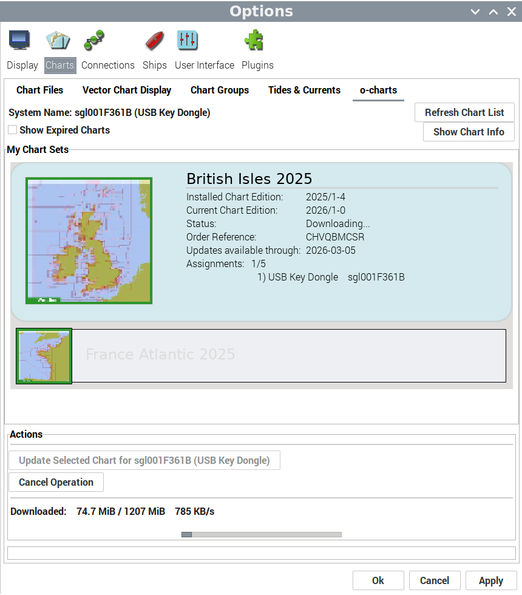
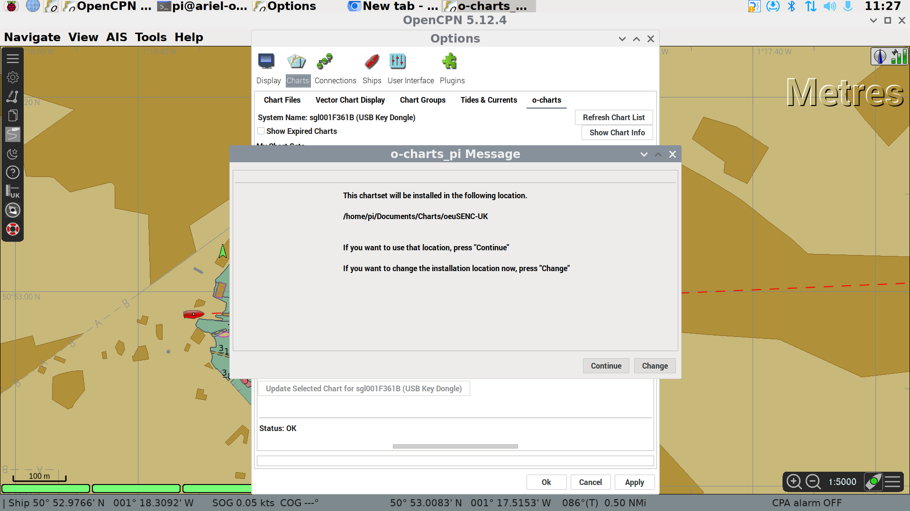
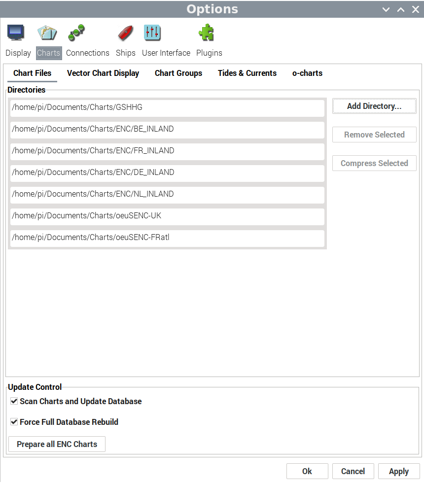
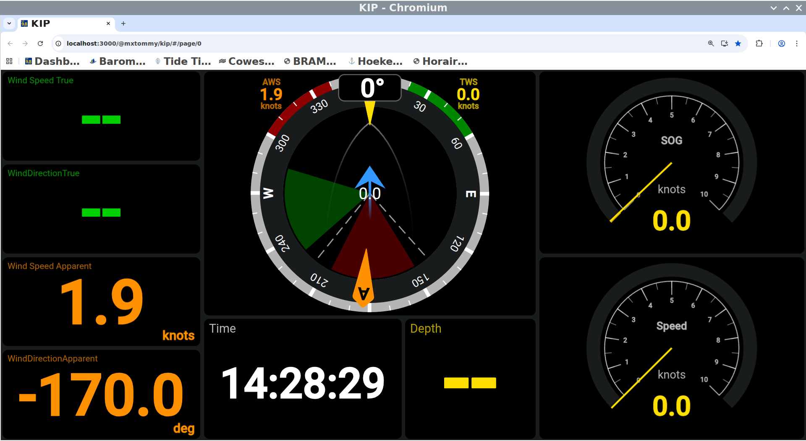
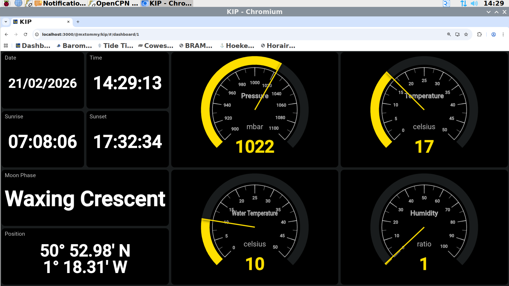
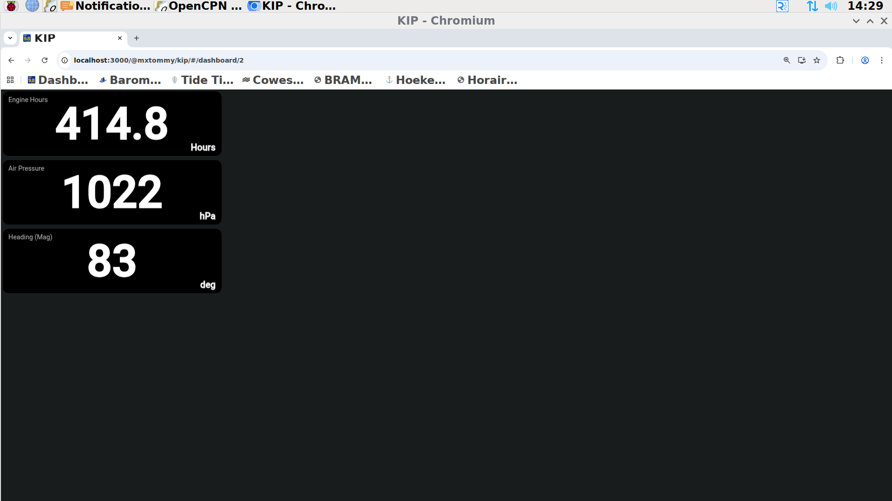

Advanced Use of OpenCPN¶
Accessing Tidal Data¶
Tidal Data
AIS Radar Plots¶
The AIS can be displayed on a RADAR-like overlay. This is available from the main control panel on the left hand side of the display.

Updating Charts¶
This should only be done with permission of the commodore or boatswain This action can be undertaken remotely by them, which is preferable.
To update charts in the Open CPN plotter, click on the settings icon (a cog) in the left hand side dropdown. This will open the following menu system.
Within the Options box, clci the charts icon in the top row, then on the second row of options that appears, click “o-charts”.
This will open up the “o-charts” options. Click “Refresh Charts List” and wait for the plotter to check the Internet server for any updates.

Click on the first chart set (in this image “British Isles 2025”). If there is a chart update available, under the available actions you will be able to click “Update Selected Chart for sgl001F361B (USB Key Dongle)”
The software will then update a chart pack update from the internet. This will take some time.

When the download finishes, you will be asked if you want to use the normal storage locaation for chart files. Click “Continue”
Repeat steps 3 - 5 for the other chart packs installed in the system (in the image we also have “France Atlantic 2025”)

Once all chart packs have had their downloads stored on the plotter, click on the “Chart Files” option on the second row of options, then click “Prepare all ENC Charts”
Finally, Click “Apply” at the bottom of the Options dialogue box, wait for the charts to be applied and then click “Ok”.
KIP Dashboard¶
The KIP dashboard runs on a web browser. The browser should open automatically, if it doesn’t, the blue globe logo on the top bar next to the Raspberry Pi logo will start the software. Navigate to IP address.
The initial page is useful for sailing, showing wind, speed, course etc.

Further pages are available. To change between pages, use the keyboard clicking Ctrl and Up arrow or Ctrl and Down arrow to change page.


Further information will be added to the screens as it becomes available.